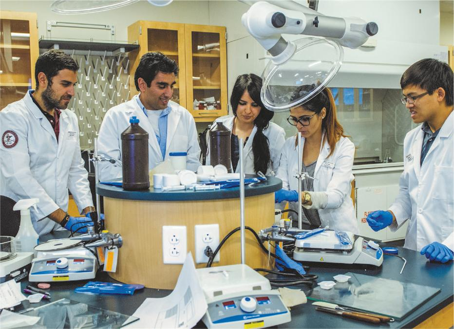
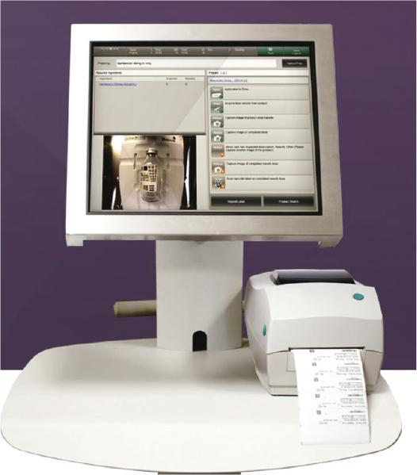
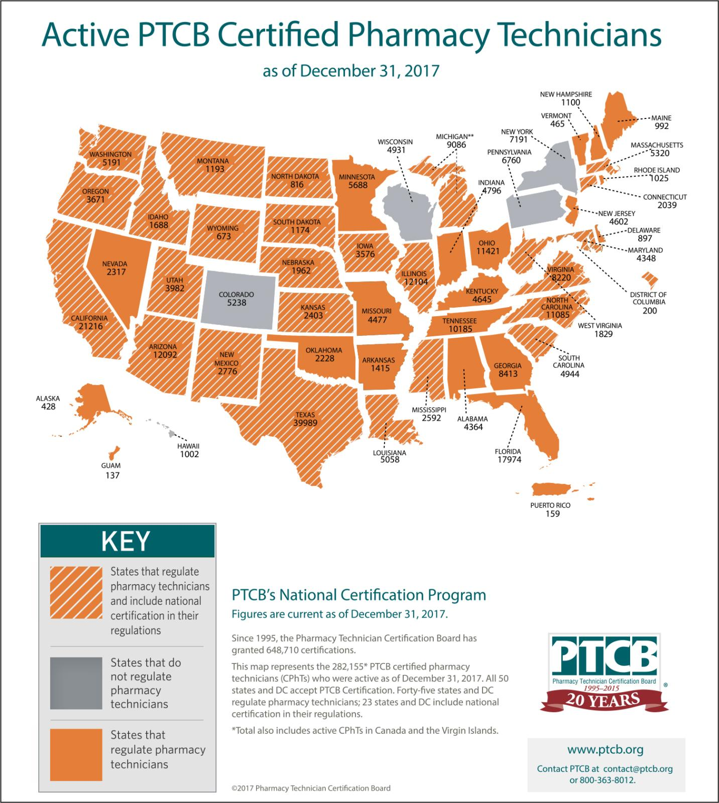
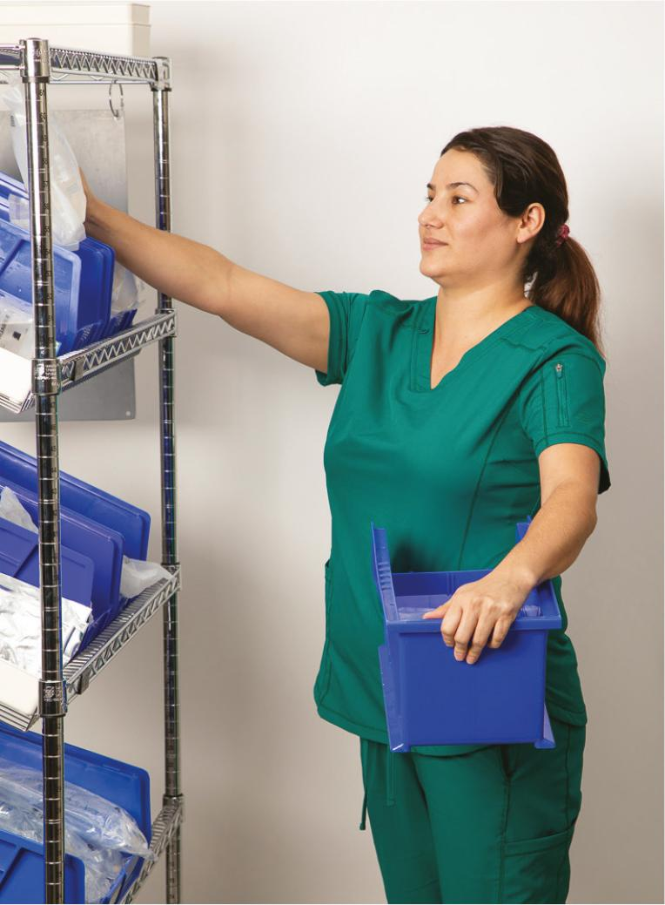

PART 1: CONCEPTS
1.4 Sterile Compounding Personnel
As mentioned earlier, pharmacists and pharmacy technicians work collaboratively in a sterile compounding environment. These individuals may also work closely with other healthcare providers and personnel such as physicians, nurses, infectious disease specialists, respiratory therapists, registered dietitians, and environmental services or facilities management personnel. For example, pharmacists may work closely with infectious disease specialists to identify appropriate IV antimicrobial therapy to treat a virulent staphylococcal infection or with registered dietitians to prescribe parenteral nutrition (PN) therapy. Pharmacy technicians may work with environmental services, facilities management personnel, or contracted vendors to ensure that USP <797> standards are upheld when surface sampling is conducted or when the high-efficiency particulate air (HEPA) filters are recertified.
In addition, sterile compounding pharmacists and pharmacy technicians must collaborate to prepare CSPs according to applicable standards and laws, thus helping to ensure that patients receive safe and effective medication therapy. To meet these objectives, sterile compounding personnel must have an absolute understanding of a facility’s standard operating procedures as well as related practice standards. In addition, they must develop and maintain excellent aseptic technique skills and be able to effectively apply those skills in a myriad of complex compounding scenarios, with an ever-growing list of new drugs and cutting-edge procedures. Underlying all of these responsibilities is a commitment by sterile compounding pharmacists and pharmacy technicians to exemplify professional and ethical behavior, demonstrate a mutual trust and respect for each other’s expertise and skills, and maintain an open channel of communication while collaborating in the workplace setting.
Pharmacists
Pharmacists who work in the sterile compounding environment must possess a comprehensive array of knowledge and skills in order to provide safe and effective pharmaceutical care. The educational and training requirements to become licensed pharmacy practitioners are based on a single national standard; however, some pharmacists pursue advanced, postgraduate certifications. Education and training in sterile compounding and aseptic technique can vary widely but should include both didactic coursework and skills training to align with practice standards. This combination of didactic and experiential (hands-on) education gives pharmacists the knowledge needed to provide safe and effective CSPs for patient administration.
Educational and Training Requirements for Pharmacists
Prior to 2003, pharmacists in the United States were required to possess a minimum of a bachelor’s degree in pharmacy. Since January 1, 2003, new pharmacy school graduates are required to earn a doctor of pharmacy (PharmD) degree. For a PharmD degree, pharmacy programs vary but often require at least two years of undergraduate coursework, followed by four years of professional study that typically includes a specified number of experiential hours in various pharmacy settings. Some pharmacists choose to further specialize by pursuing postgraduate education with either a clinical focus (e.g., a residency program) or a research focus (e.g., a fellowship program). Areas of specialization for pharmacists are pharmacotherapeutics, pediatrics, infectious disease, ambulatory care, critical care, emergency medicine, informatics, internal medicine, geriatrics, pediatrics, nutritional support, psychiatry, investigational, and pharmacy administration.

To achieve licensure, pharmacists must pass the North American Pharmacist Licensure Examination (NAPLEX), which is developed by the National Association of Boards of Pharmacy (NABP) for use by the state boards of pharmacy as part of their assessment of competence to practice pharmacy. They must also pass a standardized pharmacy law examination such as the Multistate Pharmacy Jurisprudence Examination (MPJE). The MPJE combines federal- and state-specific questions to test the pharmacy jurisprudence knowledge of prospective pharmacists.
Upon passing the NAPLEX and the MPJE (or similar) examinations, pharmacists then register with the board of pharmacy in the state in which they intend to practice. This process often requires the pharmacist to pass a criminal and fingerprint-based background check. Licenses of registered pharmacists are typically renewed annually or biannually, depending on the state. In addition, most states require the completion of a certain number of continuing education units (CEUs) or credits for renewal of pharmacist licensure.
As part of their pharmacy education, pharmacists typically complete some college coursework that includes didactic instruction related to sterile compounding. Most pharmacists also receive experiential training in sterile compounding and aseptic technique as part of their pharmacy curriculum. However, the extent of hands-on sterile compounding and aseptic technique training varies dramatically among colleges of pharmacy. In most cases, pharmacists receive the bulk of their sterile compounding and aseptic technique training on the job, either during their hospital pharmacy rotation or while employed at a hospital or a compounding pharmacy.
Beginning in 2019, pharmacists who wish to become certified in compounded sterile preparations pharmacy may pursue an advanced specialty credential offered by the Board of Pharmacy Specialties (BPS). Registered pharmacists must complete 4,000 hours of pharmacy experience in CSPs and achieve a passing score on the BPS Compounded Sterile Preparations Specialty Certification Examination. This Compounded Sterile Preparations Pharmacy Specialty Certification is often abbreviated using the acronym BCSCP.
Roles and Responsibilities of Pharmacists in Sterile Compounding Facilities
Pharmacists who work in sterile compounding facilities utilize their general pharmacy knowledge and skills coupled with their specialized training in sterile compounding and aseptic technique. This dual role requires pharmacists to stay apprised of new regulations and standards in both pharmacy areas.
General Pharmacy Knowledge and Skills
The general pharmacy knowledge and skills used by sterile compounding pharmacists in their daily tasks include:
- ensuring compliance with federal and state laws that govern pharmacy practice
- exhibiting ethical decision-making and behavior in the pharmacy and cleanroom suite
- interacting effectively with other healthcare professionals, such as pharmacy technicians, supply and purchasing personnel, equipment and facilities maintenance personnel, environmental services personnel, and others
- conducting interprofessional collaboration with physicians, nurses, and laboratory personnel related to the prescribing of CSPs
- using drug formulary systems
- following medication safety standards
- answering drug compatibility questions or clinical pharmacy questions posed by healthcare practitioners
- verifying medication orders entered by prescribers who utilize computerized provider order entry (CPOE) systems (see Figure 1.1)
- entering medication orders that are faxed or scanned to the pharmacy, sent by a pneumatic tube system, or hand-delivered to the pharmacy
- consulting with prescribers on a regular basis to ensure the appropriateness of the medication therapy
- checking the work of pharmacy technicians and, occasionally, other pharmacists (e.g., verifying pharmacy calculations or checking prescribers’ orders against pharmacy-generated labels).
View long description Hide description
The form includes information for the following: Patient name, date and time, order, drug name, dose, drug form, dose unit, route of administration, diluent, frequency, date and time with staet and end, ordering physician, and order type.
Specialized Knowledge and Skills Related to Sterile Compounding
In addition to these general tasks, pharmacists who work in sterile compounding facilities must possess knowledge and skills specifically related to sterile compounding and aseptic technique. For example, sterile compounding pharmacists must be able to:
- strictly adhere to all sterile compounding standards established in USP <797> and all hazardous compounding standards established in USP–NF General Chapter <800> Hazardous Drugs—Handling in Healthcare Settings (USP43-NF38), commonly referred to as “USP–NF General Chapter <800>,” “USP Chapter <800>,” or, simply, “USP <800>”
- review CSP components and additives for compatibility, osmolarity, osmolality, and solution pH
- evaluate containers, closures, compounding environments, storage environments, and CSP components to determine beyond-use dating (BUD) and storage requirements
- perform in-process and end-process verification checks of pharmacy technicians’ work using in-person checks, workflow management systems, or remote photo verification systems
- recommend medication therapy and interval dosage adjustment based on clinical drug levels or PN needs
- oversee quality assurance and continuous, quality-improvement initiatives to comply with accreditation or credentialing requirements (when applicable), USP <797>, and USP <800>
- oversee facility compliance with environmental testing (surface sampling, air-quality sampling, HEPA filter testing) and preparation release testing, and take appropriate action when results are out of required or best-practice parameters
- comply with all personnel requirements related to garbing, hand hygiene, and behavior in the sterile compounding environment
- continually improve their knowledge and skills by engaging in continuing professional development via employer-based training opportunities, as well as high-quality, continuing education activities accredited by the Accreditation Council for Pharmacy Education (ACPE)
- train or oversee the training of sterile compounding personnel.

Pharmacy Technicians
Like pharmacists, pharmacy technicians who work in sterile compounding facilities must have a solid foundation of the knowledge and skills needed to fulfill the responsibilities of technicians in a variety of pharmacy settings. In addition, these individuals must have specialized, advanced training to prepare CSPs for patient administration.
Educational and Training Requirements for Pharmacy Technicians
The educational and training requirements for pharmacy technicians vary greatly among states. Currently, there is no single standard for the education, training, certification, or licensure of pharmacy technicians in the United States. However, creating a national practice standard for pharmacy technician education and training has received a groundswell of support from pharmacists, pharmacy technicians, pharmacy technician educators, and pharmacy professional organizations. These individuals and organizations cite patient safety concerns, the growing complexity of pharmacy practice, and the changing scope of practice of pharmacy technicians as rationales for adoption of best practices which includes a national practice standard for pharmacy technicians. This practice standard includes the completion of education and training jointly accredited by the American Society of Health-System Pharmacists (ASHP) and the Accreditation Council for Pharmacy Education (ACPE): the ASHP/ACPE Accreditation Standards for Pharmacy Technician Education and Training Programs, followed by completion of a national pharmacy technician certification exam, and subsequent registration or licensure from the board of pharmacy in the state in which they plan to practice. (For more information on these industry-recognized, best-practice standards for the education and training of pharmacy technicians, see the section titled “Examine the Resources” later in this chapter.)
Programs accredited by ASHP/ACPE are based upon the ASHP’s Model Curriculum for Pharmacy Technician Education and Training, Fifth Edition. The Model Curriculum, as it is commonly referred to, is designed to provide standards, key elements, objectives, and goals for Entry-Level and Advanced-Level pharmacy technician education and training programs. As pharmacy practice standards advance, and the scope of practice for pharmacy technicians evolves, ASHP will publish new editions of the Model Curriculum, as necessary, in response to those changes. Programs seeking initial accreditation or reaccreditation status submit an extensive self-assessment that is reviewed by the Pharmacy Technician Accreditation Commission (PTAC), an appointed commission comprised of experienced pharmacy professionals. These professionals make a formal recommendation that is then sent to the boards of both ASHP and ACPE for review. Upon approval of both organizations, the program becomes ASHP/ACPE accredited. Accredited programs are regularly reviewed and must submit evidence of continued compliance with accreditation standards to maintain this highly recognized status.
Effective January 1, 2019, ASHP/ACPE-accredited programs may offer two levels of training and education: entry level and advanced level. Entry-level programs require a minimum of 400 hours of health-related education and training, extending over a period of at least 8 weeks. This training must include 120 hours of didactic (classroom) coursework, 50 hours of simulated (laboratory) training, and 130 hours of experiential site experience. The 100 remaining hours may be allocated to these three areas as the program director and faculty see fit. Entry-level programs are required to provide didactic education related to sterile compounding; however, they are not required to provide any simulated or experiential sterile compounding and aseptic technique training.
Advanced-level programs require a minimum of 600 hours of health-related education and training, extending over a period of at least 15 weeks. This training must include 160 hours of didactic coursework, 100 hours of simulated training, and 200 hours of experiential site experience. The 140 remaining hours may be allocated to these three areas as the program director and faculty see fit. Advanced-level programs are required to provide both didactic coursework in sterile compounding and simulated training related to sterile compounding. Most programs that teach sterile compounding at an advanced level dictate a minimum of 40 hours of hands-on lab training in sterile compounding and aseptic technique.
ASHP/ACPE-accredited pharmacy technician programs offered through accredited colleges or universities often teach sterile compounding as a stand-alone course in which clock hours can range from 40 to 160 hours, with the average course being 3 credit hours or 120 clock hours.
In addition to these educational requirements, many states require pharmacy technicians to be certified. Certification is the process by which a nongovernmental association grants recognition to an individual who has met certain predetermined qualifications specified by that profession. To become certified, pharmacy technicians must take a national certification examination. Two pharmacy technician certification exams are offered in the United States. The most widely used exam is the Pharmacy Technician Certification Exam (PTCE), offered by the Pharmacy Technician Certification Board (PTCB) and accepted by all state boards of pharmacy (see Figure 1.2). The Exam for the Certification of Pharmacy Technicians (ExCPT), offered by the National Healthcareer Association (NHA), is currently accepted by a portion of the state boards of pharmacy.
Currently, there is movement toward a national practice standard for education and training for pharmacists and pharmacy technicians who prepare CSPs. This type of course is referred to as a sterile compounding and aseptic technique (SCAT) certificate program or an IV certificate program, and is generally comprised of both didactic education and hands-on skills training. Taught by pharmacy professionals with a high degree of subject-matter expertise, this type of course is typically offered through a program that is accredited by ACPE as a provider of continuing pharmacy education (CPE) for pharmacists and pharmacy technicians. An ACPE-accredited SCAT certificate program requires sterile compounding personnel to pass intensive testing of both knowledge and competency prior to making CSPs for patient administration. PCTB-certified pharmacy technicians who have completed a PTCB-recognized SCAT education and training program and have demonstrated work experience in compounded sterile preparations may apply to sit for the PTCB Certified Compounded Sterile Preparation (CSPT) exam. These specially trained, experienced, and certified pharmacy technicians are often referred to as CSPTs.

Roles and Responsibilities of Pharmacy Technicians in Sterile Compounding Facilities
Pharmacy technicians who work in sterile compounding facilities use their general pharmacy knowledge and skills coupled with their specialized training in sterile compounding and aseptic technique. This dual role requires pharmacy technicians to stay apprised of new regulations and standards in both pharmacy areas.
Field Notes
In 2017, more than 100 industry-leading pharmacists and pharmacy technicians from all areas of pharmacy practice; pharmacy professional organizations; and accreditation, regulatory, and certification organizations gathered in Dallas, Texas, for the first Pharmacy Technician Stakeholder Consensus Conference. According to a summary of the stakeholders’ conference, titled “Toward Uniform Standards for Pharmacy Technicians” by W.A. Zellmer, et. al., conference attendees overwhelmingly agreed that the profession of pharmacy has “an obligation to make certain that pharmacy technicians are educated and regulated in a manner that ensures public safety.” Attendees also agreed that state boards of pharmacy should establish minimum qualifications for entry-level pharmacy technicians and that additional training and certification programs should be developed to support technicians in gaining more advanced competencies in areas such as sterile compounding and aseptic technique.
After review of the recommendations gleaned from the Pharmacy Technician Stakeholder Consensus Conference, the Pharmacy Technician Accreditation Commission (PTAC) formally recommended to the governing boards of ASHP and ACPE that the accreditation standards and curriculum be revised as a precursor to the adoption of a national practice standard for the provision of a competent pharmacy technician workforce. To that end, the revised ASHP/ACPE Accreditation Standards for Pharmacy Technician Education and Training Programs went into effect January 1, 2019. ASHP/ACPE-accredited institutions may now provide education and training programs that are based on entry-level competencies, advanced-level competencies, or both.
In 2023, in response to a growing need for technicians who could work across state lines brought on by the COVID-19 pandemic, the National Association of Boards of Pharmacy echoed the call for a national standard, to ensure that regulations pertaining to pharmacy technicians are appropriately outlined to create unified definitions, qualifications, and designations.
General Pharmacy Knowledge and Skills
The general pharmacy knowledge and skills used by sterile compounding technicians in their daily tasks include:
- ensuring compliance with applicable laws, regulations, standards, policies, and procedures
- exhibiting ethical decision-making and behavior in the pharmacy setting
- interacting effectively with other healthcare professionals, such as pharmacists, physicians, nurses, lab personnel, supply and purchasing personnel, equipment and facilities maintenance personnel, environmental services personnel, and others
- entering medication orders that are faxed or scanned to the pharmacy, sent by a pneumatic tube system, or hand-delivered to the pharmacy
- verifying accuracy of computer-printed labels
- performing pharmacy calculations
- filling medication orders
- using automated equipment for processing orders
- participating in inventory activities
- following medication safety standards.
Field Notes
In 2017, the Pharmacy Technician Certification Board (PTCB) launched the first national pharmacy technician certification exam for sterile compounding and aseptic technique: PTCB Certified Compounded Sterile Preparation Technician (CSPT) exam. To be eligible to sit for the exam, a pharmacy technician must:
- be a PTCB Certified Pharmacy Technician (CPT) and be in good standing
- have completed a PTCB-recognized sterile compounding education/training program plus 1 year of continuous, full-time, compounded sterile preparation work experience or 3 years of continuous, full-time, compounded sterile preparation work experience.
Candidates are tested on:
- sterile compounding and aseptic technique procedures (53%)
- facilities and equipment (22%)
- medications and components (17%)
- handling, packaging, storage, and disposal (8%).
Many pharmacy technicians pursuing this certification elect to fulfill the PTCB requirements by completing a PTCB-approved, ACPE-accredited, continuing education course in sterile compounding and aseptic technique.
Specialized Knowledge and Skills Related to Sterile Compounding
In addition to these general tasks, pharmacy technicians who work in sterile compounding facilities generally bear primary responsibility for the majority of all direct compounding activities. Therefore, these individuals must possess knowledge and skills specifically related to sterile compounding and aseptic technique (see the Field Notes feature box on page 23). For example, sterile compounding technicians must be able to:
- adhere to all sterile compounding standards established in USP <797> and all hazardous drug handling and compounding standards established in USP <800>
- perform all aspects of sterile compounding
- develop and maintain aseptic technique skills
- participate in quality assurance activities, environmental sampling, and other compliance and monitoring activities
- train pharmacists and pharmacy technicians in sterile compounding and aseptic technique
- continually improve their knowledge and skills by engaging in professional development via employer-based training opportunities, as well as ACPE-accredited, continuing education activities.

Legal and Ethical Issues in Pharmacy Practice
Pharmacy technicians must also understand the legal and ethical concerns related to their patient care responsibilities. Each state’s board of pharmacy provides legal regulations and oversight for pharmacy practice. In general, state pharmacy laws and regulations are based on the overarching federal laws that govern pharmacy practice. Pharmacy law will be discussed in detail in Chapter 3.